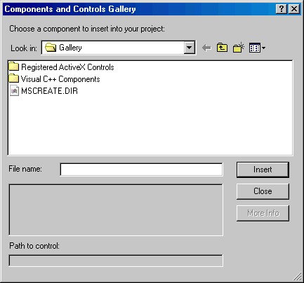

Adding an ActiveX Control to a Dialog Builder Dialog
It is possible to add ActiveX controls to Dialog Builder dialogs and programmatically manipulate them using Origin C. The ability to easily add user created and third party ActiveX controls to Dialog Builder dialogs greatly expands the possibilities available to developers who create custom applications in Origin. ActiveX controls are added to Dialog Builder dialogs much the same way as Visual C++ controls are added with a few additional steps. This section describes how to add ActiveX controls to Dialog Builder dialogs and refers to two Origin sample Dialog Builder dialogs containing ActiveX controls. The section Creating Complex Dialogs and Wizards with Dialog Builder describes the general process of creating Dialog Builder dialogs and should be reviewed first.
Add an ActiveX control to a Dialog Builder dialog.
- Build and register with Windows a user created ActiveX component and/or install third party software containing an ActiveX component on to your computer system. If you do not have an installation program for your ActiveX component copy it to your Windows system DLL folder (e.g. \winnt\system32) and execute the following command from the Windows Start:Run dialog or a DOS command prompt:
regsvr32 <your ActiveX component name>
- Use the Origin Dialog AppWizard to create a Microsoft Visual C++ project containing the resources for a Dialog Builder dialog. For information on how to do this see the section Creating Complex Dialogs and Wizards with Dialog Builder.
- In Microsoft Visual C++ select the Project:Add To Project:Components and Controls menu item to open the Components and Controls Gallery.

- In the Components and Controls Gallery browse to and select the desired ActiveX component (most likely residing in the \Common\MSDev98\Gallery\Regeisterd ActiveX Controls subfolder of Microsoft Visual Studio). Click the Insert button and then click OK if asked Insert this component? Finally, click OK in the Confirm Classes dialog and click the Close button in the Components and Controls Gallery.
You have now added your ActiveX component to the Microsoft Visual C++ project containing the resources for your Dialog Builder dialog.
- On the ResourceView tab in the Microsoft Visual C++ workspace window expand the [[+] next to your resources folder, expand the [+] next to the Dialog folder, and then double-click on the ID of your resource to open your dialog. See the section Opening your Resource and Workspace Files for related information.
- A button for your ActiveX control should now appear on the Microsoft Visual C++ Controls toolbar (if the Controls toolbar is not visible right-click on a blank area of the toolbar spacer and enable it). Depress the button for your control on the Controls toolbar and drag out an instance of the control on your dialog. Position, size, and assign properties to the new ActiveX control as desired. See the topic Adding Controls on a Dialog, Tabbed Dialog, or Wizard for information on adding controls to a resource in general.
- Select the Build:Rebuild All menu item in Microsoft Visual C++ to compile the resource-only DLL containing the Dialog Builder dialog with your ActiveX control.
The resource-only DLL containing the Dialog Builder dialog with your ActiveX control is now ready to be launched and manipulated in Origin using Origin C. Origin contains a number of example dialogs which fully implement Dialog Builder dialogs some containing ActiveX controls. Source files that launch and manipulate the dialogs are also included. To learn how to launch and manipulate a Dialog Builder dialog with an ActiveX control first review the section Origin C Dialog Builder Examples and then follow the steps in the next section Programmatically Accessing a Dialog Builder Dialog with an ActiveX Control.